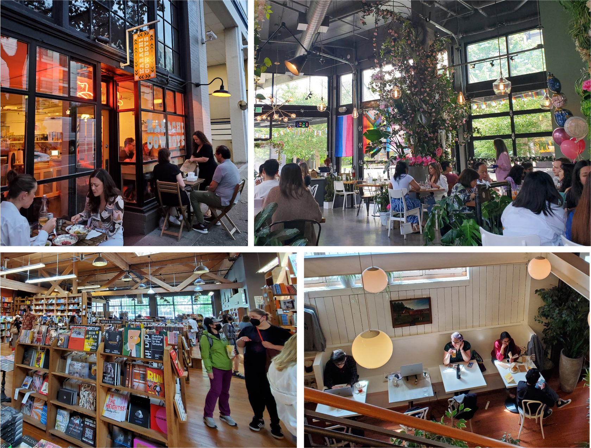

Seattle Recommendations (2023 version)
January 11th, 2024
Bellevue, WA
I've lived in the Seattle area for the past 5 years now, time sure flies by. Here's what I would recommend to friends and family visiting the area across Seattle and the surrounding neighborhoods.
List 1: In the city
Pike place market / Elliot bay waterfront
Google link
Very touristy, but still pretty fun. Lots to see and eat around the area. With all the floors and hallways in the building and surronding area it's hard to see it
all in one go. Peak touristy at the fish market where there will be loads of sightseers watching the fish mongers throw fish around. Some interesting shops underground
such as the Old Seattle paperworks, Custey MarninSaylor gift shop, and Osara Commissary. Upstairs in the local goods area is where I use to buy a lot of flowers from
local farmers and get flavored pasta from Pasta Guys. Once you are done at the market, cross the street and walk along the boardwalk with many touristy fun activities.
You can check out the Olympic sculpture park on the north end, to the Seattle aquarium and the Great Seattle Wheel farris wheel on the south end.
Total distance from Olympic Scupture park to Seattle Great Wheel then up to Pike Place Market is 31mins and 1.3mi (2km) walking based on Google Maps
Kerry Park
Google link
This is one of my favorite parks in the city, not because it has a great view (it does) or that a large space (it's not) but because of it's location.
You can easily have a nice dinner/lunch in lower Queen Anne and then take a slow uphill walk up to the park, enjoy view across downtown Seattle, then
just a block or so away is Molly Moon's Ice cream. You can take the ice cream to go and head back into the city. Great day plans or dinner plans.
Total distance from Toulouse Petite to Molly Moon's is 20mins and 0.7mi (1.1km) walking based on Google Maps
Ballard (Hiram M. Chittenden) Locks
Google link
This is another one of those really well located places that is close to food and great views. The ballard locks (or offically Hiram M. Chittenden locks) are gates
to the Salmon bay and Lake Union. Boats coming in from the Pacific side would stop here and the water would fill up or down depending on the direction of travel.
The park itself is a nice short walk, just a few blocks away from busy Ballard district. There's food there, a lot of good eats. Set up some time to
go to Ballard grab a to-go bite and head to locks and have a chill afternoon in the Botanical Garden.
Total distance from Asadero Ballard to the Ballard locks is 16mins and 0.7mi (1.1km) walking based on Google Maps
Bongos & Green lake park
Google link
One of my favorite resturants in the city is Bongos, they do a carribean sandwhich or plate with sides of tostones, yucca fries, and maduras. In the summer time
it's great to have some food and a beer on their patio. Then after lunch have a walk around Green Lake park. The park has a looping trail that is 2.9mi (4.7km)
that is a pretty easy and straight forward path. You'll see many other joggers, bikers, and in general people enjoying the nature along the lake. Lots of
options for post stroll with Chocolati for hot chocolate, or some more substantial meals along the east side of the lake shores. Bring a frisbee and pack a lunch
on warm summer days!
Green lake loop trail from
alltrails.com.
Total distance for the Green lake loop is 51mins and 2.9mi (4.7km) walking based on alltrails.com Maps

Capital Hill district
Google link
Ok, we get it, Seattle has lots of parks near food and food near parks. I'll focus on one of the more urban walkable neighborhoods now. (Yes there are food and parks nearby)
Capital hill is a neighborhood with a lot going on, once you cross over from downtown Seattle over the I-5 highway pass you'll be steps away from the Starbucks Reserve.
If you have to visit a Starbucks in Seattle, I'd visit this one (not the Pike place location which is small and has a long line up.) There is a vareity of food choices as you
continue to walk eastwards: Ramen, Korean BBQ, pizza, Mexican, many ice cream options, and fried chicken. The list goes on. The area comes to life around brunch and night time
with many options for shopping, parks, and music venues.
There are definitely more place to check out in Seattle, we haven't even gotten to the other cool neightborhoods such as Madrona, SLU, and Wallingford. I'll add them over time...
List 2: To the Eastside
Part way through the pandemic, I moved across Washington lake to Bellevue. This area is known as the "Eastside" compared to Seattle. There are 2 primary bridges you can cross either the I-90 (Homer M. Hadley bridge/ E channel bridge) or the I-520 (Evergreen Point floating bridge). The main cities on the eastside are Bellevue, Redmond, and Kirkland. Now that I've lived here for some time, there are also a lot to see and do here, just a bit more relaxed compared to Seattle.
Old Bellevue / Maydenbauer
Google link
Starting off with Old Bellevue area of downtown Bellevue. The old Bellevue street is lined with resturants: Peony Chinese cuisine, Monsoon south-east asian, Fern Thai, Gilbert's on Main Jewish delicatessen, etc.
Along with few coffee shop and obligatory ice cream (Molly Moon's again) there are 2 nice walks in the area. The first is Downtown park, it's about 1/2mi (800m) circular treelined walk,
with a large pond in the middle, plenty of benches and the occasional festival. Then there is Maydenbauer, it's a short walk from Old Bellevue and in the residential area is one of
the best parks on the Eastside. Maydenbauer park has a small swimming beach, a walkway over the water, and beautiful sunset views year-round.
Total distance from Downtown park to Maydenbauer park passing by Old Bellevue (Main st.) is 9mins and 0.4mi (640m) walking based on alltrails.com Maps
Kirkland downtown
Google link
For while when we were doing some renovations at our home (due to a water leak) we stayed temporarily in Kirkland downtown. We've been there a few times in the past
but living there was a different feeling. Everything was pretty walkable, with resturants, groceries, and even the beach only minuets away. (And for those lucky few
who work at Google Kirkland, even that was a few minuets walk away.) Starting off with Seattle Coffee Gear; a place with all the espresso machines and imported coffee from
roasters around the world. Then walk down to the Marina Park, a small local beach with many resturant patios overlooking the waters. Park lane is a narrow street lined with
resturants, bakeries, consignment shops, and Thruline Coffee Co (Great Afagatos made with coffee ice cream). Make some time to check out the cross-kirkland corridor that
cuts across Kirkland on old railroad path, it's a great place for a jog or a stroll. You'll eventually make it to the section that cuts across the Google campus public
path that also includes a beer garden and community garden.
Total distance from Marina Park Kirkland to the Cross-Kirkland Corridor path passing through Park lane is 16mins and 0.8mi (1.3km) walking based on Google maps. Maps
I'll update these lists over time, but all of the above are some pretty solid recommendations. Again, this is based on my own personal preferences.